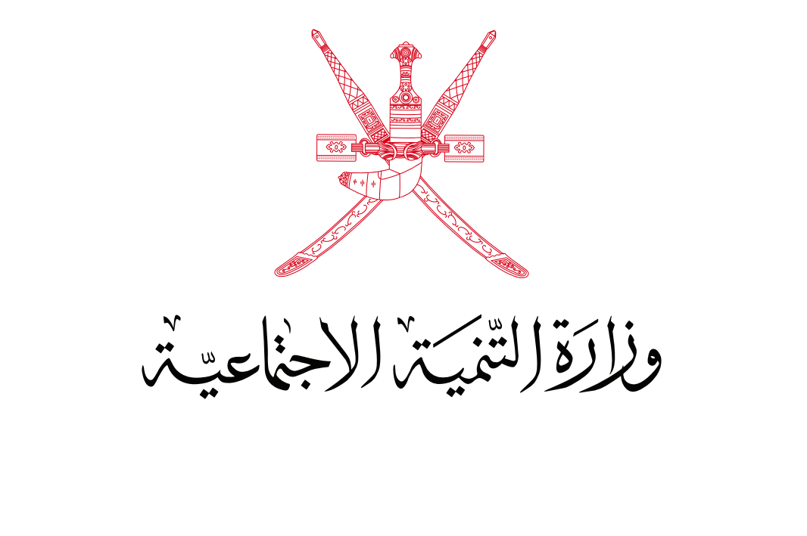

نسعى من خلال هذه المنصة إلى دعم وتمكين أسر التمكين الاقتصادي عبر توفير بيئة تسويقية إلكترونية آمنة وموثوقة، تتيح لها عرض منتجاتها وتعزيز فرصها في تحقيق الاستدامة المالية.
تضم المنصة مجموعة متنوعة من المنتجات المنزلية التي تعكس مهارة الأسر وإبداعها، وتشمل المأكولات الشعبية والحلويات، إضافة إلى البخور، والعطور، والمنتجات الرقمية، والأزياء الظفارية، والمنتجات الطبيعية التي تلبي احتياجات المجتمع